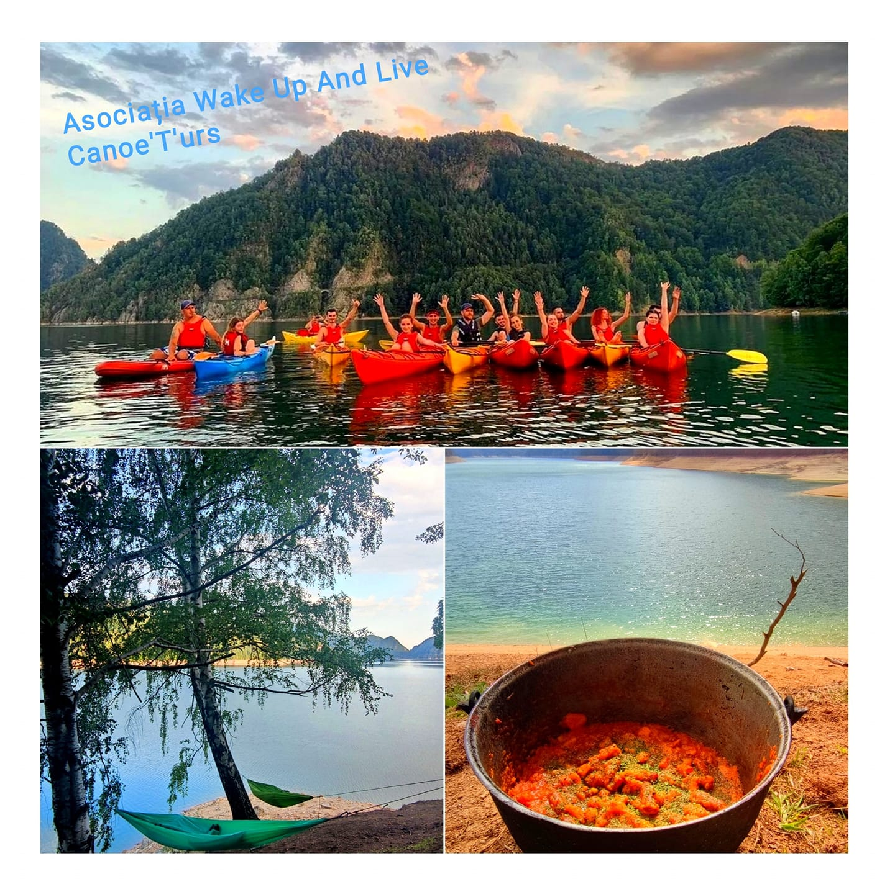

Cu CAIACUL și HAMACUL pe LACUL VIDRARU

Canoe T'urs vă invită să petrecem o zi frumoasă în natură .
Este un eveniment ideal atât pentru familii , începători cât și pentru avansați , nu este obligatoriu să știi să înoți , toți participanții vor purta vestă de salvare.
Caiacurile sunt special concepute pentru turele comerciale, oferind chiar și persoanelor fără experiență, o stabilitate și direcție senzațională .
Evenimentul se va desfășura duminică , 07 august 2022 , între orele 10:00 - 17:30.
Duminică dimineața la ora 9:45 , ne întâlnim cu toții la pontonul Canoe T'urs ( pe Transfăgărășan, lângă Hotel Valea cu Pești) , se ține un instructaj despre cum trebuie să stăm corect în caiac , despre cum trebuie să vâslim , facem cunoștință cu ambarcațiunile din dotare.
Vom petrece 2 - 3 ore în caiac pe Lacul Vidru .
În jurul orelor 13.00 ne vom deplasa cu vaporașul pe cealaltă parte a Lacului pentru un prânz în natură din partea casei (mâncare la ceaun ). Siesta o vom face în hamacele deja pregătite unde ne vom relaxa , socializa și vom admira superbul peisaj.
La finalul zilei ne întoarcem cu vaporașul la
pontonul Canoe T'urs.
LOCURI DISPONIBILE : 30 persoane
Tarif pentru 1 zi : 200 lei /persoană
Include :
- caiace sit in - expediție
- padele
- veste de salvare
- asistență permanenta pe apă (din barcă cu motor)
- plimbare cu vaporașul pe Lacul Vidraru
- masa de prânz
- hamace ( marca Ummoc - atelier românesc de hamace , gândit și cusut în familie. Creat în Munții Carpați de către trei frați pasionați de arhitectură și drumeții. Ummoc a fost croit pentru a face ieșirile în natură cât mai confortabile ) .
- plus o surpriză din partea organizatorilor.
Prețul NU include :
- transportul nu este inclus . Dacă nu aveți mașină , vă putem ajuta cu un loc disponibil în mașinile celorlalți participanți .
ECHIPAMENT RECOMANDAT:
- Ochelari de soare
- Îmbrăcăminte adecvată sezonului
- Pălărie, șapcă sau orice protecție pentru cap
- Mănuși de protecție (similare cu cele de bicicletă) - ( opțional )
- Încălțăminte de apă (opțional)
- Haine de schimb
ORGANIZATORI :
- ( Trezește-te și Trăiește)
- Canoe T'urs
- Mirena Baraj Vidraru